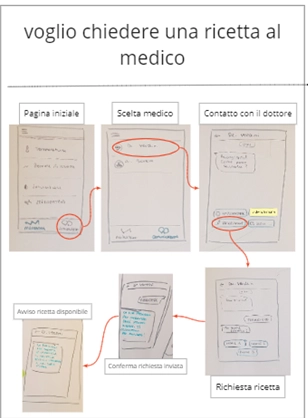
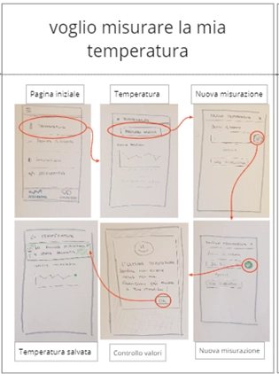
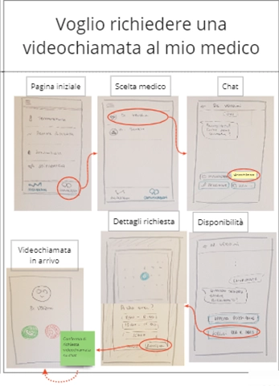
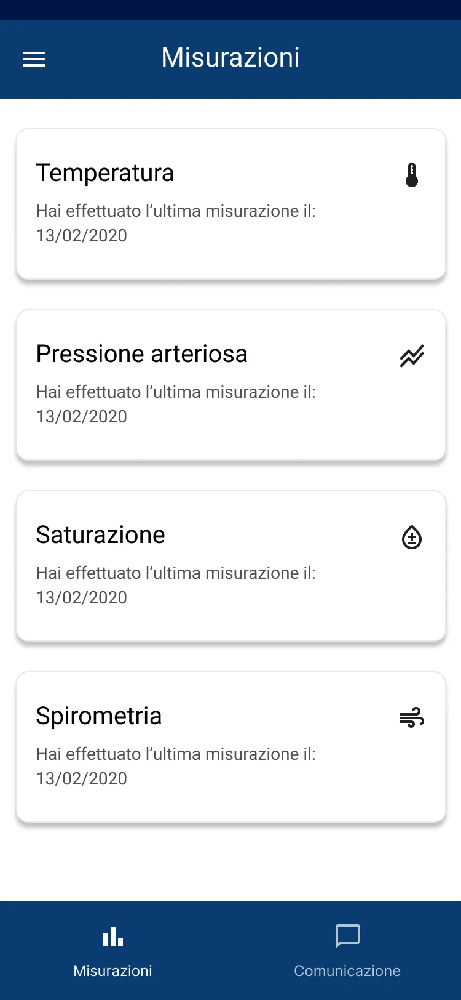
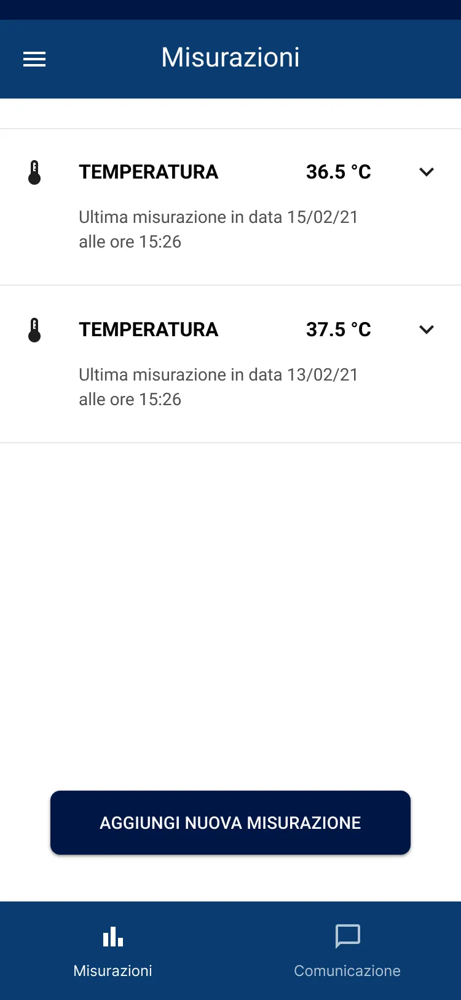
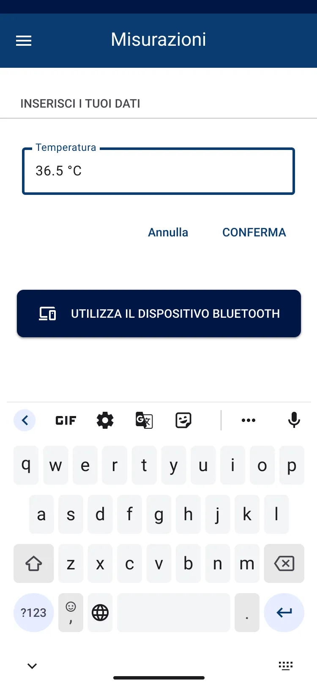
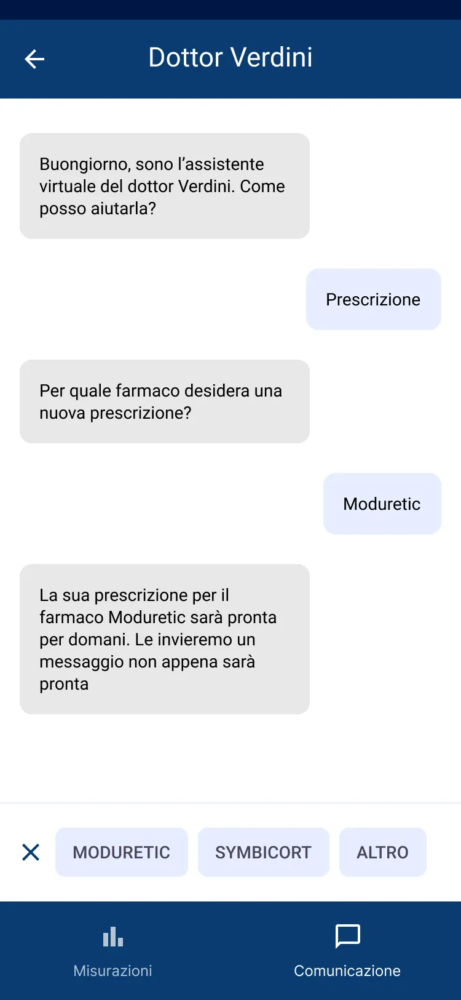
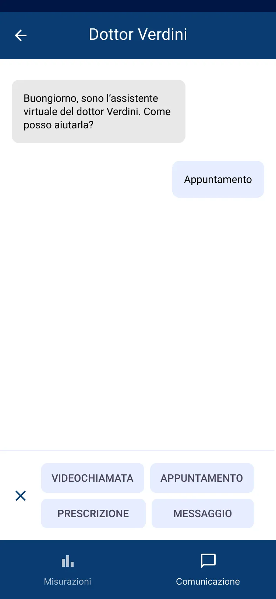
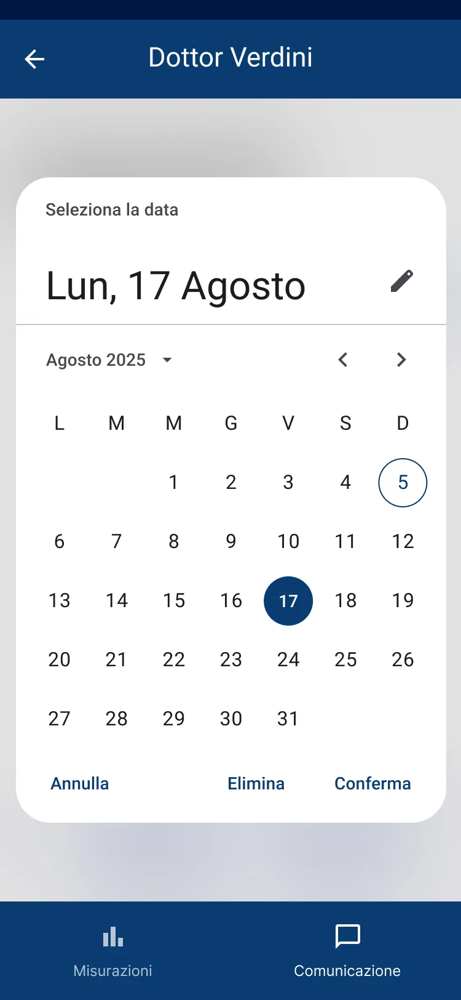

Redesigning a Telemedicine App for Elderly Patients.
Making health communication simple, intuitive, and trustworthy.
Medicaltech is a 5-day design sprint focused on improving the usability of a telemedicine mobile app and introducing video appointment booking. Working in a team of six, we applied the design thinking process to identify key usability issues and redesign the experience around clarity and accessibility. The result is a streamlined platform where patients can track measurements, request prescriptions, book video visits, and communicate with doctors in one simple flow.
The app had all the necessary features, measurements, prescriptions, messaging, and video calls, but users over 60 struggled to complete basic tasks. Buttons were hard to find, labels were unclear, and key actions like starting a video call caused confusion. As a result, many users preferred calling or messaging their doctor directly instead of using the app. The issue wasn’t missing functionality, it was poor usability and misalignment with users’ needs.
Together with my team, I ran usability tests with four elderly participants using their own medical devices. During think-aloud sessions, we observed how they tried to log in, add measurements, and contact their doctor. Some key insights emerged:
How could we make the app feel as natural as sending a message on WhatsApp?
I focused on simplifying the navigation and aligning the interface with familiar mental models. Instead of floating action buttons or hidden gestures, we prioritized clear labels, explicit actions, and a communication-first flow.









The redesign made a measurable difference for our elderly users:
After the redesign, users completed key tasks, such as logging in, adding measurements, and contacting their doctor, more quickly and with noticeably less hesitation.
Major blockers, including hidden buttons, unclear labels, and misleading actions, were eliminated. The simplified navigation created a more intuitive and cohesive communication flow..
Notifications, calls, and primary actions became immediately understandable. Users felt more in control of the app and less reliant on external tools like phone calls or messaging apps.
Empathy reveals friction we can’t see in analytics. Elderly users need explicit affordances. Simplicity and clarity always win over trends. And testing early changes everything.